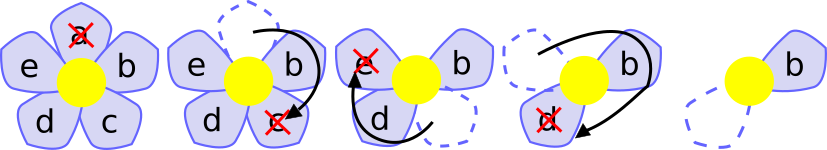

Pour décider du nom du chaton qu'elle vient d'adopter, Julie a inscrit des noms sur les pétales d'une fleur, puis imaginé le jeu suivant.
Elle commence par détacher le pétale situé tout en hautun pétale. Puis elle détache un pétale sur deux, en tournant dans le sens des aiguilles d'une montre. Lorsqu'elle a fini le premier tour, elle continue à enlever un pétale sur deux parmi les pétales restants, et ainsi de suite,Puis elle applique la suite d'instruction suivante jusqu'à ce qu'il ne reste plus qu'un seul pétale sur la fleur.:
Si on applique ce jeu sur une fleur à cinq pétales, on obtient :
Sur la grande fleur de Julie, quel sera le nom inscrit sur le dernier pétale restant ?
Julie a appliqué ce jeu sur sa fleur à 10 pétales. Le dernier pétale restant était celui portant le nom .
Quel nom portait le premier pétale détaché par Julie ?
Le premier pétale détaché par Julie est celui portant le nom . Quel sera le nom inscrit sur le dernier pétale restant ?
Pour vous aider, vous pouvez cliquer sur les pétales pour les marquer ou démarquer.